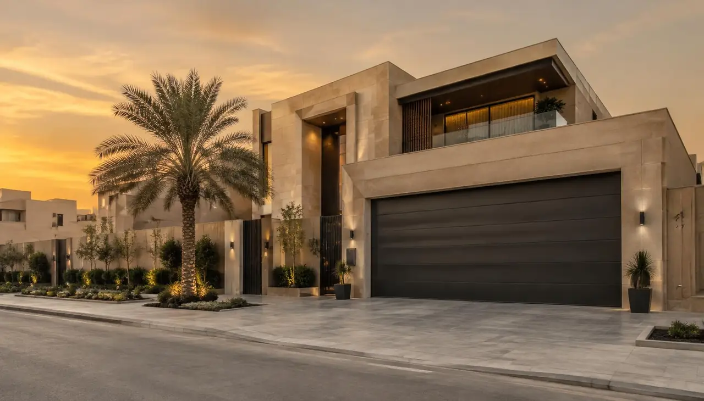
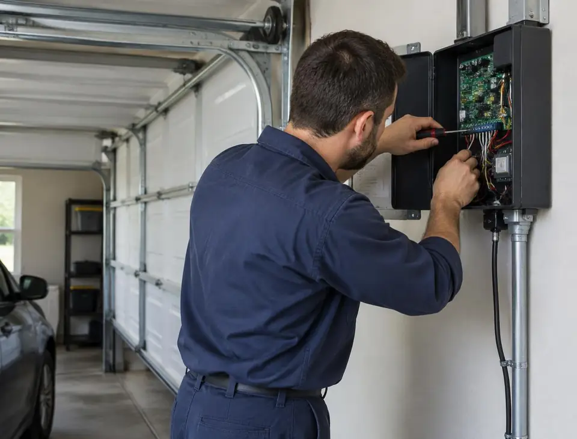

صيانة وتصليح أبواب الكراجات الكهربائية
صيانة أبواب الكراج بالرياض وتصليح أعطال التوقف والصوت المرتفع وانحراف السكة وضبط الحساسات.
تفاصيل الخدمة — صيانة وتصليح أبواب الكراجات الكهربائية
فني أبواب كراج بالرياض لصيانة وتصليح أبواب الكراج الكهربائية، أبواب الرول والشتر، الأبواب السحاب والمفصلية، وإصلاح المحركات والدينمو مع توفير قطع غيار أصلية للمنازل والمحلات والمصانع.
من باب الكراج في منزلك إلى بوابة المستودع الكبيرة، نتعامل مع جميع أنواع الأبواب الكهربائية تركيباً وصيانةً وإصلاحاً.
صيانة أبواب الكراج بالرياض وتصليح أعطال التوقف والصوت المرتفع وانحراف السكة وضبط الحساسات.
تفاصيل الخدمة — صيانة وتصليح أبواب الكراجات الكهربائيةتركيب أبواب رول بالرياض وصيانة أبواب الرول للمحلات والبايكات والمستودعات بخامات مناسبة للاستخدام اليومي.
تفاصيل الخدمة — تركيب وصيانة أبواب الرول التجاريةإصلاح أبواب الشتر الكهربائية واليدوية، وعلاج الشرائح المعوجّة وأعطال المحرك والأقفال.
تفاصيل الخدمة — صيانة أبواب المحلات والشترصيانة الأبواب الصناعية بالرياض للمحطات والمصانع والمستودعات وأرصفة التحميل.
تفاصيل الخدمة — صيانة أبواب المحطات والمصانعتركيب أبواب سحاب بالرياض مع محرك باب سحاب مناسب لوزن البوابة، وصيانة السكك والعجلات والجرايد.
تفاصيل الخدمة — تركيب وصيانة الأبواب السحابتركيب ذراع باب مفصلي بالرياض للبوابات ذات الدرفة والدرفتين، وصيانة الأذرعة وضبط زوايا الفتح.
تفاصيل الخدمة — أذرعة الأبواب المفصلية Swing Gate Operatorتصليح دينمو باب الكراج ومعالجة الأعطال الميكانيكية والكهربائية في ماكينة سحب الأبواب.
تفاصيل الخدمة — إصلاح دينمو جراج السحبإصلاح محركات أبواب الكراجات والرول والسحاب، وتغيير التروس والمكثفات والحساسات الداخلية.
تفاصيل الخدمة — إصلاح محركات الأبواب الكهربائيةبرمجة الريموتات، وإصلاح لوحات التحكم، وتركيب وضبط حساسات الأمان والخلايا الضوئية.
تفاصيل الخدمة — صيانة لوحات التحكم والريموتات والحساسات
عطل باب الكراج أو بوابة المدخل لا يحتمل التأجيل؛ فهو يمس أمان المنزل وحركة السيارة اليومية، وفي المحلات يعني تأخر فتح النشاط. لذلك نبدأ دائماً بفحص الباب كاملاً: المحرك، لوحة التحكم، الريموت، الحساسات، السكة والنوابض، ثم نحدد العطل الحقيقي بدل الاكتفاء بحلول مؤقتة.
اتصل أو أرسل رسالة واتساب مع وصف للمشكلة، ويُفضَّل إرسال صورة أو مقطع قصير للباب.
يصل الفني إلى موقعك ويفحص الباب والمحرك والكهرباء والحساسات لتحديد سبب العطل بدقة.
نشرح لك العطل والحل المقترح وقطع الغيار المطلوبة قبل البدء في العمل.
نُصلح أو نركّب، ثم نجرب الباب عدة مرات مع الريموت والحساسات ونسلّمه جاهزاً للاستخدام.
صور توضيحية لأنواع الأبواب والمحركات وقطع الغيار التي نركبها ونصونها في الرياض. اضغط على أي صورة لتكبيرها.

القطعة غير المناسبة قد تُشغّل الباب أياماً ثم تتسبب في عطل أكبر. لهذا نوفر قطع غيار أصلية ومتوافقة، ونركبها ونضبطها في موقعك.
يصل فريقنا إلى موقعك في مختلف أحياء الرياض، ومن أكثر الأحياء التي نخدمها:
نقدم صيانة وتصليح أبواب الكراجات الكهربائية، وتركيب وصيانة أبواب الرول التجارية وأبواب المحلات والشتر، وتركيب وصيانة الأبواب السحاب وأذرعة الأبواب المفصلية، وإصلاح دينمو جراج السحب ومحركات الأبواب الكهربائية، وصيانة لوحات التحكم والريموتات والحساسات، وصيانة أبواب المحطات والمصانع، مع توفير قطع الغيار الأصلية.
نعم، نخدم أحياء الرياض المختلفة مثل الملقا والنرجس والياسمين والصحافة والعارض والنخيل وقرطبة والسلي والعزيزية، إضافة إلى شمال وجنوب وشرق وغرب ووسط الرياض.
اتصل بنا مباشرة على الرقم 0510421182 أو راسلنا عبر واتساب، واكتب نوع الباب والحي ووصفاً مختصراً للعطل، ويمكنك إرسال صورة أو مقطع للباب لتسريع التشخيص.
نعم، نوفر قطع غيار أصلية مثل المحركات والدينمو ولوحات التحكم والريموتات والحساسات والجرايد المسننة والنوابض والسكك، ونختار القطعة المتوافقة مع نوع بابك ومحركه.
في حالات كثيرة يمكن إصلاح المحرك، مثل تغيير التروس أو المكثف أو إصلاح اللوحة. بعد الفحص نوضح لك إن كان الإصلاح مجدياً أم أن الاستبدال هو الخيار الأفضل.
نعم، نتعامل مع أبواب المحلات والبايكات وأبواب الشتر الكهربائية، وكذلك أبواب المحطات والمصانع والمستودعات والأبواب المقطعية الكبيرة.